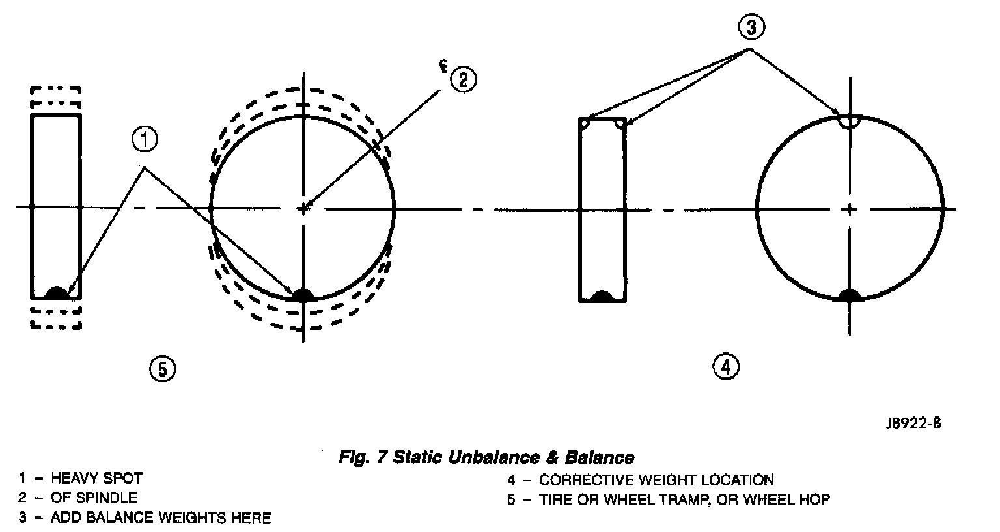
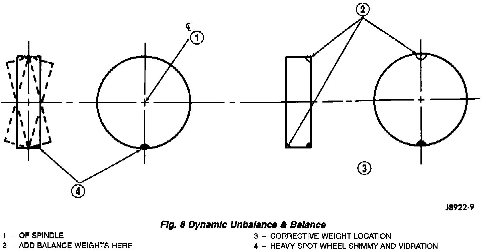

Balance
Fig. 7:

Fig. 8:

It is recommended that a two plane service dynamic balancer be used when a tire and wheel assembly require balancing. Refer to balancer operation instructions for proper cone mounting procedures. Typically use front cone mounting method for steel wheels. For aluminum wheel use back cone mounting method without cone spring.
NOTE: Static should be used only when a two plane balancer is not available.
For static imbalance, find location of heavy spot causing imbalance. Counter balance wheel directly opposite the heavy spot. Determine weight required to counterbalance the area of imbalance. Place half of this weight on the inner rim flange and the other half on the outer rim flange. Off-vehicle balancing is necessary.
NOTE: Wheel balancing can be accomplished with either on or off vehicle equipment. When using on-vehicle balancing equipment, remove the opposite wheel/tire.